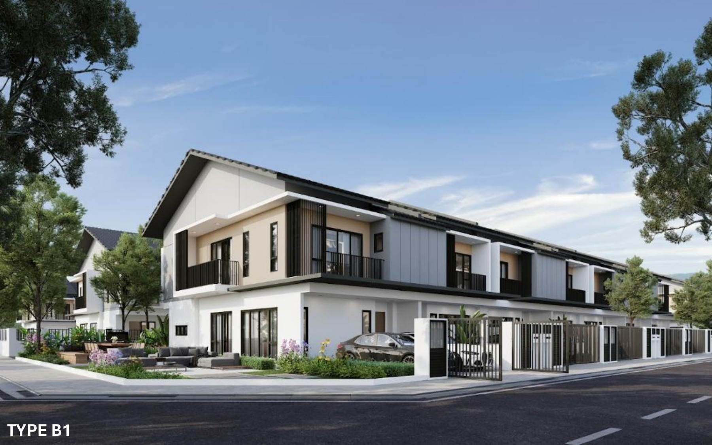

Terrace · Phase 2
Estuari ParkHomes 2
Price guidanceFrom RM1 million
Land22' × 75'
Built-upAbout 2,369–2,439 sq ft
Home type2-storey terrace
Rooms4 bedrooms · 4 bathrooms
The current release uses one 22' × 75' land format. B1 and B2 are layout variations within that same release, both with four bedrooms and four bathrooms.
Ask about ParkHomes 2